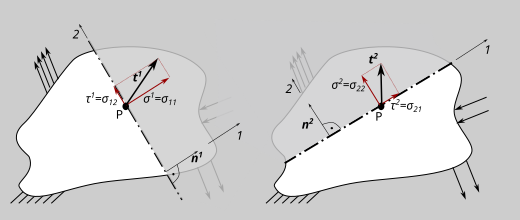
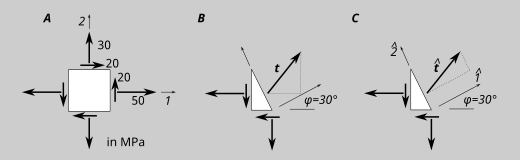
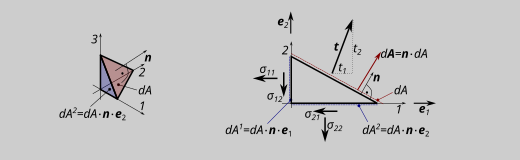
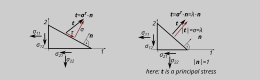

stress tensor, traction#
stress in one dimension, engineering stress definition#
The mechanical stress is defined as a force related to the surface \(\sigma=F/A\) (or a small part of a force \(dF\) related to a small part of the surface \(dA\)).
Two types of stress can thus be defined: the real stress (which refer to the real actual geometry \(dA\)) and the technical stress (which refers to the initial or referenz geometry \(dA_0\)).
For small deformations (or strains; and this is what we are looking at here), the engineering stress is almost equal to the real stress.
engineering stress: \(\sigma=F/A\approx F/A_0; \;\; \sigma= dF/dA\approx F/dA_0\)
stress tensor#
The following explanations are written down for 2-dimensional problems (plane stress state). All statements can be transferred analogously to 3 dimensions.

In the figure, \(\vec{t}=\boldsymbol{t}=t_{i}\) is the traction or stress vector. The total stress state at one point is described by two (or in 3D three) traction vector for two (or in 3D three) perpendicular cuttting planes. The traction vectors occurring on each section plane can be written in components with respect to an orthonormal basis resulting from the normal vectors on each section plane. The components of each vector can be written in the rows of a tensor 2. grade: the stress tensor \(\boldsymbol{\sigma}=\sigma_{ik}\):
\(\vec{t}^1=\boldsymbol{t}^1=t_{i}^1=
\sigma^1 \cdot \boldsymbol{e}^1+\tau^1 \cdot \boldsymbol{e}^2=
\sigma^{11} \cdot \boldsymbol{e}^1+\sigma{21} \cdot \boldsymbol{e}^2\)
\(\vec{t}^2=\boldsymbol{t}^2=t_{i}^2=
\tau^2 \cdot \boldsymbol{e}^1+\sigma^2 \cdot \boldsymbol{e}^2=
\sigma^{21} \cdot \boldsymbol{e}^1+\sigma{22} \cdot \boldsymbol{e}^2\)
stress tensor in two dimensions (plane stress): \(\boldsymbol{\sigma}=\sigma_{ik}= \begin{bmatrix} \sigma^{11} & \sigma^{12} \\ \sigma^{21} & \sigma^{22} \\ \end{bmatrix}\)
… or in three dimensions:
\(\boldsymbol{\sigma}=\sigma_{ik}= \begin{bmatrix} \sigma^{11} & \sigma^{12} & \sigma^{13}\\ \sigma^{21} & \sigma^{22} & \sigma^{23}\\ \sigma^{31} & \sigma^{31} & \sigma^{33}\\ \end{bmatrix}\)
NOTE
Due to the moment equilibrium, the assigned shear stresses must be equal.
The following therefore applies \(\sigma_{ik}=\sigma_{ki}\) The stress tensor is symmetric!
EXAMPLE

A: Write down the stress tensor for the given stresses!
B: Calculate the traction \(\boldsymbol{t}\) (components in the \(1\)-\(2\)-system)
C: Calculate the traction \(\hat{\boldsymbol{t}}\) (components in the \(\hat{1}\)-\(\hat{2}\)-system)
cauchy formula#

Another way to calculate the traction: If a small surface or volume elemnet is cut under a certian direction, the cutting surface is \(dA\) and the direction of the cutting plane is given by its normal vector \(\boldsymbol{n}\). The projection of the Surface \(dA\) on each plane of the basis system (\(1\)-\(2\)-plane, \(2\)-\(3\)-plane, \(1\)-\(3\)-plane) results by the scalar product of the oriented surface vector \(dA \cdot \boldsymbol{n}\) with the base-vector perpendicular on this plane (for ex.: \(2\)-\(3\)-plane \(dA^{1}= (dA \cdot \boldsymbol{n})\cdot \boldsymbol{e}_1\). The equilibrium in \(1\)-direction of a small cuttex volume element is:
\(\rightarrow \text{ : }0=t_1\cdot dA- \sigma_{11}(d A \cdot \boldsymbol{n})\cdot \boldsymbol{e}_1)- \sigma_{21}(d A \cdot \boldsymbol{n})\cdot \boldsymbol{e}_2)- \sigma_{31}(d A \cdot \boldsymbol{n})\cdot \boldsymbol{e}_3)\)
\(\boldsymbol{n} \cdot \boldsymbol{e}_1 = (n_1 \cdot \boldsymbol{e}_1+n_2 \cdot \boldsymbol{e}_2+n_3 \cdot \boldsymbol{e}_3) \boldsymbol{e}_1\)
for a orthonomal basis \(\boldsymbol{e}_i \cdot \boldsymbol{e}_k =1 \text{ for }i=k; =0 \text{ for }i\neq k\)
\(\Rightarrow\)
\(0=t_1-\sigma_{11}\;n_1-\sigma_{21}\;n_2-\sigma_{31}\;n_3\)
\(0=t_2-\sigma_{12}\;n_1-\sigma_{22}\;n_2-\sigma_{32}\;n_3\)
\(0=t_3-\sigma_{13}\;n_1-\sigma_{23}\;n_2-\sigma_{33}\;n_3\)
\(\Rightarrow\;t_k=\sigma_{ik}\;n_i=\boldsymbol{t}=\boldsymbol{\sigma^T}\cdot \boldsymbol{n}\)
EXAMPLE
Calculate \(\boldsymbol{t}\) in the ex. above with the CAUCHY-formula
principal stresses and invariants#
If the traction (or the stress vector) in one point is pointing exact in the normal direction of the plane, no shear stresses are existing for this cutting direction, and the only existing normal stress is one principal stress.
In two dimensions the principal stresses can be found using the MOHRs circle. In three directions the CAUCHY-formula can be used.

If the traction \(\boldsymbol{t}\) is pointing in the normal direction, the vector \(\boldsymbol{t}\) can be written separated in quantity \(|\boldsymbol{t}|=\sigma^{1,2,3}=\lambda^i\) and direction \(\boldsymbol{n}\). So, if \(\boldsymbol{t}\) is a principal stress, the following equation is fullfilled:
\(\boldsymbol{\sigma}^T\cdot\boldsymbol{n}=\boldsymbol{t}=\lambda\cdot\boldsymbol{n}\) or
\(\sigma_{ik}\cdot n_i=t_k=\lambda\cdot n_k\)
\(\Rightarrow \lambda\;n_k-\sigma_{ik}\; n_i =0\)
because of: \(n_k=\delta_{k_i} \; n_i\) it is:
\(\lambda\;n_k-\sigma_{ik}\;n_i = n_i(\delta_{ik}\; \lambda-\sigma{ik})=0 \)
The equations has solutions (exept \(\boldsymbol{n}=\boldsymbol{0}\)), for:
\(det\delta_{ik}\; \lambda-\sigma{ik})=0\) (“eigenvalue-problem”)
\(det \begin{bmatrix} \lambda-\sigma^{11} & -\sigma^{12} & -\sigma^{13}\\ -\sigma^{21} & \lambda-\sigma^{22} & -\sigma^{23}\\ -\sigma^{31} & -\sigma^{31} & \lambda-\sigma^{33}\\ \end{bmatrix}\)
(…)
\(\Rightarrow\;\;\lambda^3+I_1\lambda^2-I_2\Lambda+I_3=0\)
\(I_1=\sigma_{jj}=\sigma_{11}+\sigma_{22}+\sigma_{33}\)
\(I_2=-1/2(\sigma_{ik}\;\sigma_{ik}-\sigma_{ll}\;\sigma_{nn})\)
\(I_3=det(\sigma_{ik})\)
\(I_i\) are the three invariants of the stress tensor. The qubic equation leads to three results for \(\lambda^{1,2,3}\) the three main stresses. The values are the principal stresses and are sorted by magnitude:
\(\sigma^1=max\{\lambda^1;\lambda^2;\lambda^3\}\)
\(\sigma^2=mid\{\lambda^1;\lambda^2;\lambda^3\}\)
\(\sigma^3=min\{\lambda^1;\lambda^2;\lambda^3\}\)
The normal vectors on the the three perpendicular cutting planes, and so the direction of the principal stresses, are the “eigenvectors” \(\boldsymbol{n}^i\):
\(n^1_i(\delta_{ik}\; \sigma^1-\sigma_{ik})=0\)
\(n^2_i(\delta_{ik}\; \sigma^2-\sigma_{ik})=0\)
To be sure, that the normal vectors are forming a right handed system, the third vector schold be calculeted with the vector product (and not via \(n^3_i(\delta_{ik}\;\lambda^3-\sigma_{ik})=0\)):
\(\boldsymbol{n}^3=\boldsymbol{n}^1 \times \boldsymbol{n}^2\)
With \(|\boldsymbol{n}^i|=1\) the three normal vectors are a orthonormal basis; the principal coordinate system.
EXAMPLE:
Calculate the principal stesses and the prioncipal basis for the stress tensor
\(\sigma_{ik}= \begin{bmatrix} 20 & 0 & 15\\ 0 & 30 & 0\\ 15 & 0 & 25\\ \end{bmatrix} \text{MPa}\)